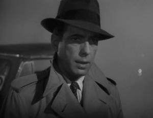
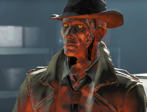

Fallout 4 Was Made for Me
-I remember standing up in front of my classroom twenty five years ago and giving a presentation about a book I had recently read. I was in sixth grade and the book was about a nuclear holocaust. That’s right, eleven year old me was infatuated with – what I now realize was – global events and catastrophes… but in a good way! What I mean is, I don’t like the idea of people being hurt or killed by any means, it’s more the idea of folks coming together to persevere in the face of extraordinary adversity. So, for as long as I can remember, post-apocalyptic scenarios have always grabbed my attention.
I never cared for guns, fighting, or even sports as a child so being as interested as I was in thermonuclear weapons, I admit, was a little odd. But again, it wasn’t the ‘hurting of people’ I liked, I simply found the pure mechanics and physics intriguing! How could such a massive amount of power come from such a tiny device? The book report presentation was more of an ode to my love of science as well as human compassion, perseverance, and ingenuity.
In addition to actual science, I was drawn toward science fiction as well. Star Trek: TNG was my favorite TV show growing up, and sci-fi and post-apocalyptic scenarios go together like PB&J. So when Terminator 2: Judgment Day came out, I was certain I had found the most perfect movie ever created – not only did it involve nuclear weapons and a post-apocalyptic future, it even had cool robots to boot!
Video games won me over at an early age. Playing Kaboom on my parents’ Atari 2600 is literally one of my earliest memories and video games have been my entertainment vector of choice ever since. And I can’t talk about my childhood without mentioning LEGO. Building, tinkering, and taking things apart is innate in me so LEGO was my gateway drug to my present-day love of building actual robots and other machines in my basement.

As I got older my taste in certain things began to change, as they do. My love for science fiction didn’t diminish, but I began listening to different types of music for example. Jazz, swing, and doo-wop became music to my ears, as it were. And I began watching more and more classic cinema like Casablanca and the original Twilight Zone. I developed a love for Film Noir and the old hard-boiled detective movies, not only for the intriguing stories, but for the style and theatrics as well.
Over the last few years, I’ve began to seriously contemplate the ideas of consciousness as well as artificial intelligence and its implications. I’m at the point where I’m not sure what the difference is exactly when it comes to sophisticated (or even simple!) computers and what we consider conscious beings. That’s a whole other story, but the point is: I’ve become fascinated with the concept of Artificial Intelligence, sentience, and robots in general.
Okay, with all that said... A few years ago a video game called Fallout 3 was released and it instantly became my favorite piece of media of any kind, be it book, movie, TV show, or video game. Why? Because it was a video game that hit on so many of the things I have grown up loving: science fiction, post-apocalyptic survival, atomic weapons, exploration… and it even had mid-century music! I didn’t think anything could top that… until Fallout 4 was released. Fallout 4 had all of the things I loved about Fallout 3 but added on a healthy dollop of other things I loved including classic Noir tropes like hard-boiled detectives, as well as robot sentience and its affect on humanity.

One of the main characters in the game (who turned out to be one of my favorite fictional characters of all time) is a sentient android named Nick Valentine whose conscience was derived from an actual gumshoe from the 1950’s that was uploaded to the robot. As you could imagine, this conjures up a plethora of philosophical questions, hypothetical scenarios, and intriguing ideas that one could spend an egregious amount of time contemplating (cough, ahem, cough).
Fallout 4 also introduced a building mechanic that enables the player to not only be creative and build custom weapons, buildings, machines, armor, and even robots! ...but also creates a feeling of immersion and impact seldom found in other forms of media. You get to create your own settlements and assign folks to work your own customized farms, you can build your own house and fill it with whatever furniture and devices you like, you build electric generators and run wire, you build water purifiers and dig wells, you construct walls and set up defense mechanisms... the list of customizable things is astounding – all making the feeling of experiencing that world just that much more real.
You can befriend a reporter and become very familiar with journalism of the time and reveal hidden secrets of the Fallout world; you can become intimately acquainted with an innately curious robot scientist turned “human” who is driven by the need to learn and understand; or become buddies with a dozen or so other unique characters, all with their own lives and backstory. Or, if you’re antisocial, you can pal around with a German Shepard named Dogmeat – or not, and just go it alone!
But here’s the amazing part: I haven’t even mentioned the main part of the game. All of the stuff I’ve described is purely optional! The actual storyline and character arc (which itself is alterable and tailored to your decisions) is another aspect of the game that you can choose – or not choose – to do. I could go on and on about the day-night cycles and different food recipes and pre-apocalypse billboard advertisements all adding to an incredible amount of detail and realism. And don’t even get me started on the physical aspects of the world that tell countless stories of peoples’ lives before the apocalypse, all told through the environment and notes and things just found lying around. (That’s arguably my favorite part of the game!)
So not only does Fallout involve many, many things I’ve come to love and even identify myself with, it presents me with the opportunity to come as close to living in this alternate universe as I’ll ever get. And admittedly, thankfully so. Because, lets be honest, the Fallout Universe is a dreadful place. But again, it’s not the depression and suffering that entices me, it’s the prospect of making the world I’ve found myself in just a little bit better through ingenuity, creativity, and a bit of Humanity – even if it is just a game.